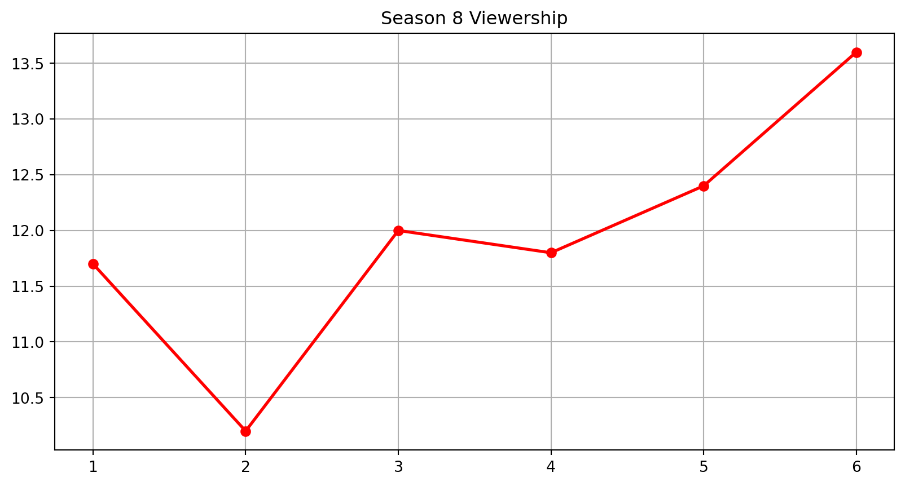

Code
season = 1season = 1
# Injected Parameters
season = 7import pandas as pd
import os
from datetime import datetime
results = {}
data_file = f"../Data/season_{season}.csv"
if not os.path.exists(data_file):
raise FileNotFoundError(f"Data for season {season} not found!")
season_data = pd.read_csv(data_file)
if season_data.empty:
raise ValueError(f"Data object 'season_data' is empty in {data_file}")
season_data['premiere_date'] = pd.to_datetime(
season_data['premiere_date'].str.split("(").str[1].str.split(")").str[0]
)
num_episodes = season_data['no_season'].max()
start_date = season_data['premiere_date'].min().strftime('%B %d')
end_date = season_data['premiere_date'].max().strftime('%B %d')
year = season_data['premiere_date'].max().strftime('%Y')
avg_viewers = round(season_data['viewers'].mean(),3)
min_viewers = round(season_data['viewers'].min(),2)
max_viewers = season_data['viewers'].max()
top_episode = season_data[season_data['viewers'] == max_viewers].iloc[0]
results[season] = {
'num_episodes': num_episodes,
'start_date': start_date,
'end_date': end_date,
'year': year,
'avg_viewers': avg_viewers,
'min_viewers': min_viewers,
'max_viewers': max_viewers,
'top_episode_title': top_episode['title'],
'top_episode_description': top_episode['description'],
'highlighted_episodes': season_data[season_data['viewers'] > avg_viewers][
['no_season', 'title', 'directed_by']
].rename(columns={'no_season': 'No. in season', 'directed_by': 'Director'})
}
# 打印结果看看有没有问题(From the Wikipedia) Game of Thrones is an American fantasy drama television series created by David Benioff and D. B. Weiss for HBO. It is an adaptation of A Song of Ice and Fire, a series of fantasy novels by George R. R. Martin, the first of which is A Game of Thrones.
Set on the fictional continents of Westeros and Essos, Game of Thrones has a large ensemble cast and follows several story arcs throughout the course of the show. A major arc concerns the Iron Throne of the Seven Kingdoms of Westeros through a web of political conflicts among the noble families either vying to claim the throne or fighting for independence from it. Another focuses on the last descendant of the realm’s deposed ruling dynasty, who has been exiled to Essos and is plotting a return to the throne. A third story arc follows the Night’s Watch, a military order defending the realm against threats from the North.
Season 7 of Game of Thrones consisted of 7 episodes that aired between July 16 and August 27, 2017 on HBO. The show gathered an average of 10 million first-day TV viewers in the US, with the number growing from 9 to 12 million by the end of the season.
The most popular episode of the season was “The Dragon and the Wolf”, in which:
The wight is presented to the Lannister court. Cersei demands Jon’s neutrality, but she storms off when Jon upholds his oath to Daenerys. Tyrion meets with Cersei, apparently gaining her alliance. Cersei reveals to Jaime that she instead will use the Golden Company of Braavos to secure her hold on Westeros and allow the white walkers to destroy Daenerys and Jon’s armies. Disgusted, Jaime rides north to warn Jon and Daenerys. At Dragonstone, Theon wins his men’s respect and leads them to rescue Yara. Aboard a North-bound ship, Jon seeks out Daenerys, and they become lovers. At Winterfell, Littlefinger works to increase dissent between Arya and Sansa. Sansa, Arya, and Bran publicly accuse Littlefinger of murdering Jon and Lysa Arryn and of treason against their father. Deserted by the Lords of the Vale, Littlefinger is executed by Arya. Samwell arrives and meets with Bran. Combining Gilly’s earlier information and Bran’s vision, they realize Jon is Aegon Targaryen, the legitimate heir to the Iron Throne. Jon’s parents, Rhaegar Targaryen and Lyanna Stark, secretly married. At Eastwatch, the Night King, astride the undead Viserion, blasts a hole through the Wall with blue dragon fire; the Army of the Dead marches through.
You can see how the viewership of the episodes changed in Figure 1.
import matplotlib.pyplot as plt
plt.figure(figsize=(10, 5))
plt.plot(season_data['no_season'],
season_data['viewers'],
color='red',
linewidth=2,
marker='o')
plt.xticks(season_data['no_season'])
plt.title(f"Season {season} Viewership")
plt.grid(True)
plt.show()
Finally, the episodes with the above-average viewership were:
Requirement already satisfied: tabulate in c:\users\hp\.conda\envs\myenv\lib\site-packages (0.9.0)
| | Episode | Title | Director |
|---:|----------:|:--------------------------|:---------------|
| 4 | 5 | "Eastwatch" | Matt Shakman |
| 6 | 7 | "The Dragon and the Wolf" | Jeremy Podeswa |